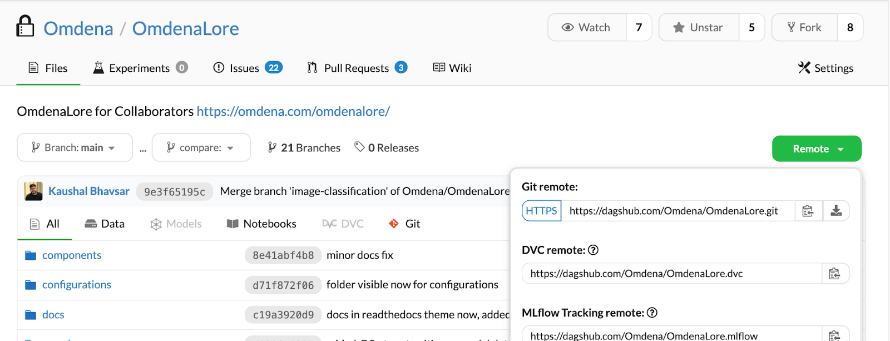
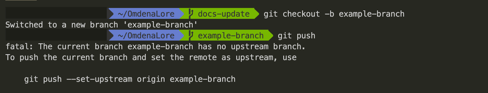
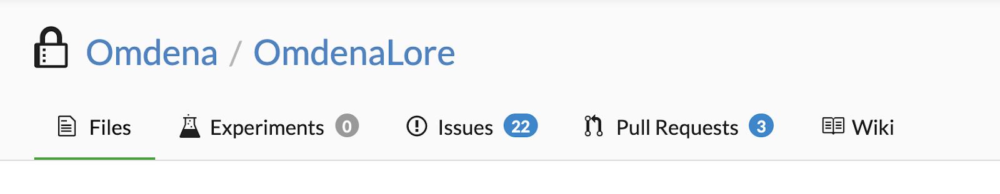
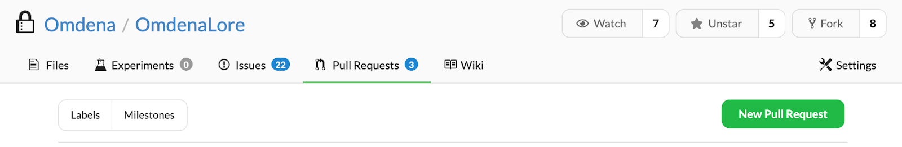
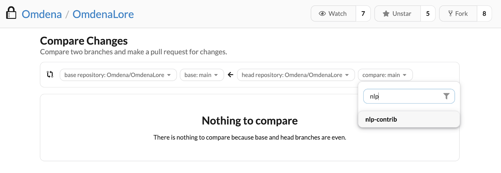
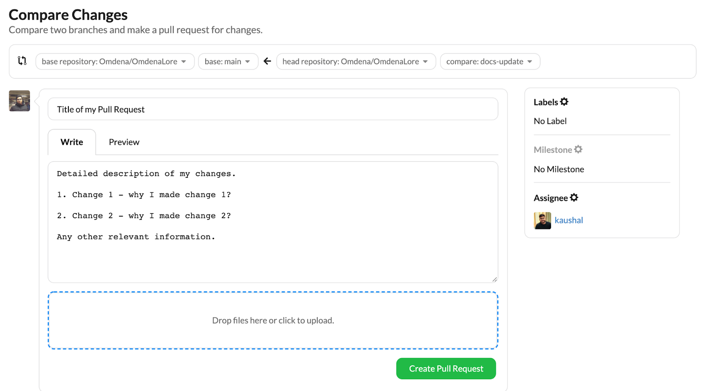

As the name suggests, OmdenaLore is a body of knowledge held by Omdena. OmdenaLore is a library/package that contains code knowledge base gathered in completed and ongoing projects.
The code knowledge base increases and gets updated as collaborators add their knowledge.
OmdenaLore is a collaborator sourced structured library.
If you have a code block that can help collaborators in current or future projects, you can add that code block to the OmdenaLore repository. The contributions to OmdenaLore repository go through peer-to-peer reviews, more details below. To make sure a valid contribution is made, please follow the steps below.
You can clone the repository locally with the following command in your terminal/Powershell: git clone https://dagshub.com/Omdena/OmdenaLore.git
If you are not comfortable with the terminal, you can use the GitHub desktop option as well.

After localizing the repository, we recommend that you open a issue explaining what you are working on. Since OmdenaLore is a collaborative platform, we wish to have great communication between you and fellow contributors and opening an issue is a good way to do so.
To open an issue, head to dagshub.com/omdenalore and click on the issue section. Create or find an issue according to your problem statement.
Once inside the local folder of the repository, make a new git branch from the main branch. Let’s say you are adding code to the nlp folder and you would like to make a nlp-contrib branch. You can do this with the following command - git checkout -b nlp-contrib . To quickly familiarize yourself with git branches, read this official primer here.
We recommend that you make a branch with your own name or the issues that you are working on. Example branch names - issues_44, john_doe, …
If you are the first one to work on that branch, it does not exist yet on DAGsHub. When you try the git push command, you might hit this error:

In this example, the branch example-branch is unrecognized by the repository online. To fix this error, run the command git automatically recommends, which in the case shown above would be: git push –set-upstream origin example-branch
Once you have pushed your branch successfully, it is time to open a Pull Request on DAGsHub.
On the repository webpage, go to the Pull Requests section.

Click on New Pull Request

On the right side of the webpage, pick the branch you want to open a Pull Request with. This branch contains the changes you are requesting to be merged into the main branch of the repository. Search for the name of your branch and select it.

IMPORTANT: This step is of utmost importance for your Pull Request’s final phase. Make sure you are adequately documenting your Pull Request with clear and concise summary points on the changes you have made. You can even upload images in this process. This will help the Pull Request reviewers understand the changes and request any changes if required. In the example below, I am making a Pull Request for my docs-update branch. Please find more information on the PR template here.

Notice the Assignee option on the right side. Here you can click on Assign and assign another collaborator you are working with if you wish to request feedback about the Pull Request or even request additional features on top of your changes. Here I assigned the Pull Request to my colleague to get this feedback on my changes.
That’s it! Now you can click Create Pull Request and share your Pull Request link in the slack channel. One of the reviewers will get to it and share their feedback with you and request to make any adjustments if required. After that, your PR will be merged into the main branch.
Whenever a pull request (PR) is generated, it’s highly recommended for collaborators to include as many of these sections in the PR description.
It makes PR approval and review process faster and efficient.
Create a branch for the feature that you are working on(if the branch names for refactoring or testing are already planned out then follow them)
gitcheckout-b<branch_name>
Commit locally and add them to your branch
Make sure that each commit contains a single logically piece of work and the commit message reflects what was done efficiently.
We use pre-commit hooks when committing to make sure that the code passes some set rules.
To get the pre-commit hooks up and running please refer to this PR
When you’re done, make a PR with the branch that you wish to merge with,
for example if you are working on OmdenaLore 0.3.1 then this would be merged into OmdenaLore 0.3.x
The reviewing team will be reviewing each PR and will help you improve the implementation, documentation and style of the PR.
If changes are needed, make the changes and push to the branch where the update will be reflected in the PR automatically.
Once the PR is approved then the reviewing team will merge the PR.